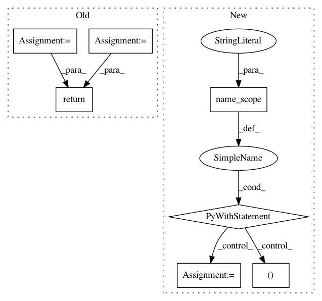

63054210b9ba10842ca54243c8543b50576482db,research/object_detection/utils/ops.py,,nearest_neighbor_upsampling,#Any#Any#,772
Before Change
[batch, height_in*scale, width_in*scale, channels].
shape = shape_utils.combined_static_and_dynamic_shape(input_tensor)
shape_before_tile = [shape[0], shape[1], 1, shape[2], 1, shape[3]]
shape_after_tile = [shape[0], shape[1] * scale, shape[2] * scale, shape[3]]
data_reshaped = tf.reshape(input_tensor, shape_before_tile)
resized_tensor = tf.tile(data_reshaped, [1, 1, scale, 1, scale, 1])
resized_tensor = tf.reshape(resized_tensor, shape_after_tile)
return resized_tensor
def matmul_gather_on_zeroth_axis(params, indices, scope=None):
Matrix multiplication based implementation of tf.gather on zeroth axis.
After Change
data_up: A float32 tensor of size
[batch, height_in*scale, width_in*scale, channels].
with tf.name_scope("nearest_neighbor_upsampling"):
(batch_size, height, width,
channels) = shape_utils.combined_static_and_dynamic_shape(input_tensor)
output_tensor = tf.reshape(
input_tensor, [batch_size, height, 1, width, 1, channels]) * tf.ones(
[1, 1, scale, 1, scale, 1], dtype=input_tensor.dtype)
return tf.reshape(output_tensor,
[batch_size, height * scale, width * scale, channels])
def matmul_gather_on_zeroth_axis(params, indices, scope=None):
Matrix multiplication based implementation of tf.gather on zeroth axis.
TODO(rathodv, jonathanhuang): enable sparse matmul option.
In pattern: SUPERPATTERN
Frequency: 4
Non-data size: 7
Instances
Project Name: tensorflow/models
Commit Name: 63054210b9ba10842ca54243c8543b50576482db
Time: 2018-05-03
Author: lzc@google.com
File Name: research/object_detection/utils/ops.py
Class Name:
Method Name: nearest_neighbor_upsampling
Project Name: tensorflow/transform
Commit Name: 54e07bdb2ba299fd6f364289510612f2fe6af8ff
Time: 2018-11-28
Author: tf-transform-dev@google.com
File Name: tensorflow_transform/analyzers.py
Class Name:
Method Name: pca
Project Name: tensorflow/transform
Commit Name: 76bfb4027c2a04d1d65dbfc3befdc2805133c957
Time: 2017-05-16
Author: no-reply@google.com
File Name: tensorflow_transform/analyzers.py
Class Name:
Method Name: uniques
Project Name: tensorflow/transform
Commit Name: 54e07bdb2ba299fd6f364289510612f2fe6af8ff
Time: 2018-11-28
Author: tf-transform-dev@google.com
File Name: tensorflow_transform/analyzers.py
Class Name:
Method Name: covariance